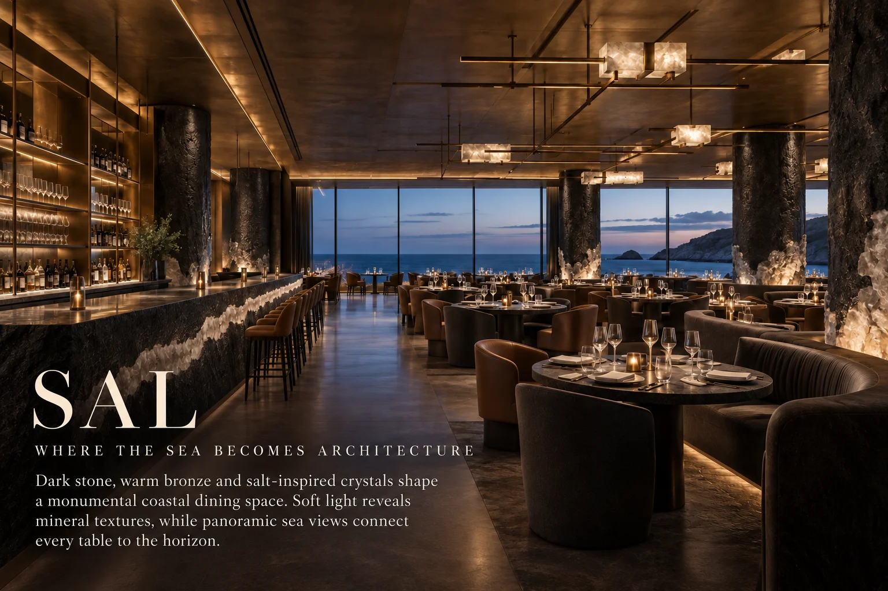
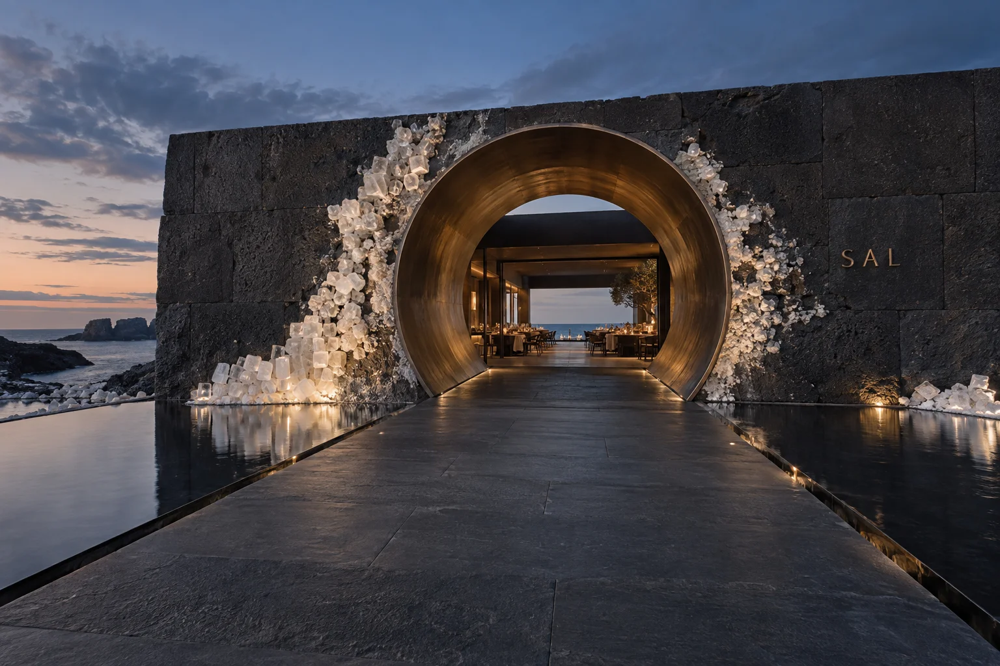
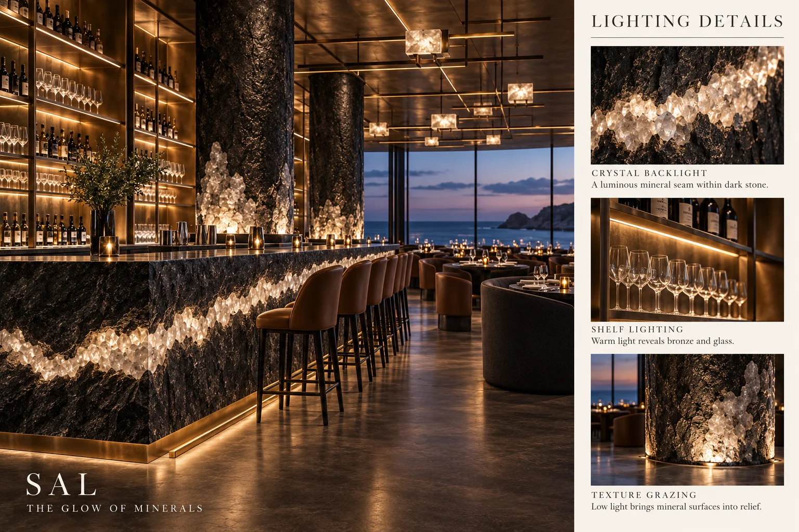
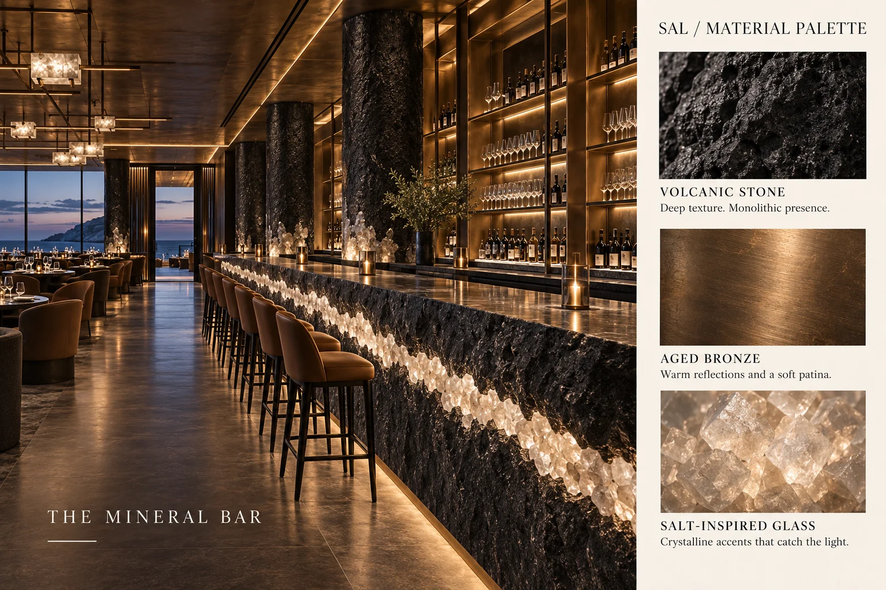
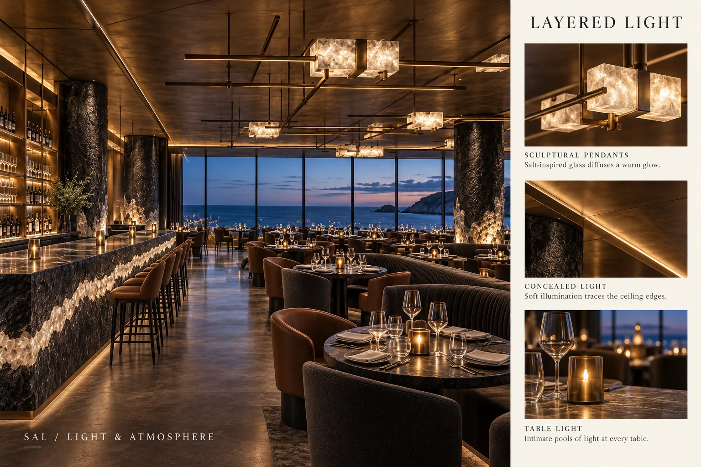
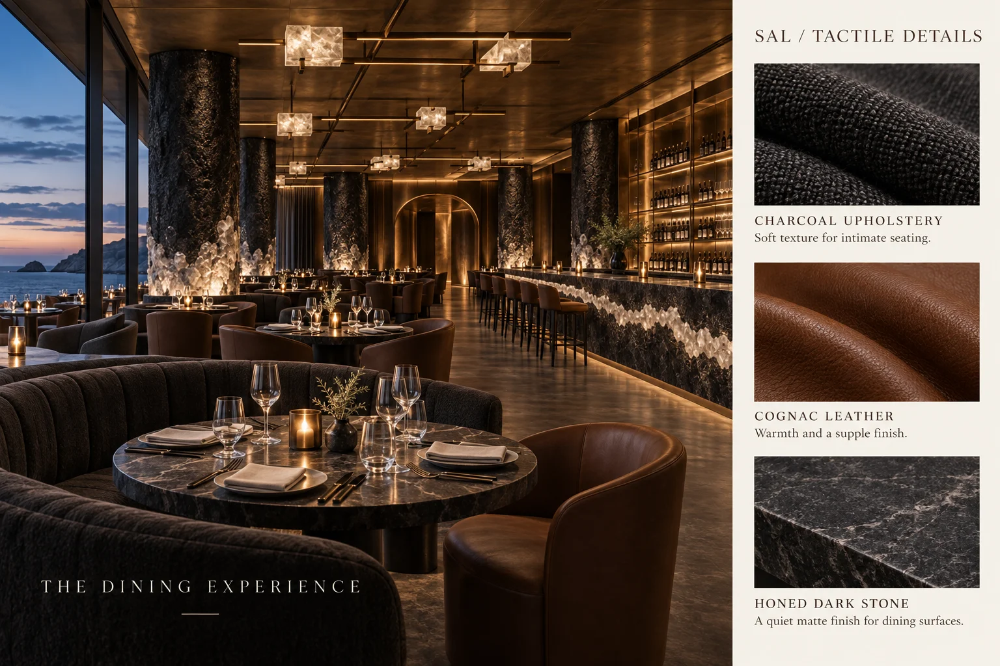

Coastal dining concept
SAL
Where the sea becomes architecture — dark stone, aged bronze and salt crystal above the water.

SAL is a coastal fine-dining concept carved from the meeting of rock and sea. A bronze portal set into black volcanic stone marks the entrance, opening into rooms of dark mineral surfaces, salt-crystal seams and long views of the water. More than a meal, it is imagined as a place to belong — calm, elemental and rooted in its coastline. The concept explores contrast: rough volcanic stone against polished bronze, dark interiors against the bright horizon, crystalline light against deep shadow. Every element refers back to salt — the mineral that joins sea, stone and table.
Material direction
Black volcanic stone; aged bronze; salt crystal and cast glass; dark stained timber; mineral plaster; natural linen and leather. These are concept-stage material directions, with final products and detailing to be developed separately.
My role
Concept, atmosphere, lighting, materials and guest journey — Maria Andriiuk.
Concept & story
SAL takes its name and its logic from salt: the trace the sea leaves on stone. The restaurant is composed as a sequence of mineral chambers — portal, bar and dining room — each framing the sea in a different way, until the horizon itself becomes part of the interior.
Emotion & atmosphere
The intended mood is elemental, calm and grounded. Dark surfaces absorb the glare of the coast while crystal seams catch the last light, and the sound of the sea remains the room’s constant background. The atmosphere is designed to make time feel slower and the meal feel anchored to the place.
Light & material direction
Lighting is layered like mineral strata: low warm lines along the bar, backlit salt-glass details, grazing light across rough stone and the natural dusk performance of the horizon. Aged bronze and volcanic stone give weight; salt crystal and glass carry the sparkle. Technical lighting and final specifications would be resolved during further design development.
Guest journey
01 / Arrival — A bronze portal in black stone, with salt crystals catching the light. 02 / Threshold — A dark, quiet passage from coast to interior. 03 / The mineral bar — A first drink at the stone bar with its illuminated crystal seam. 04 / The table — Dinner facing the open horizon. 05 / Dusk — The room darkens as the sea performs, and the crystals take over the light.
Project scope
This self-initiated, unbuilt concept is presented through seven boards covering the idea, story, atmosphere, light and materials, guest journey and final composition. Concept imagery communicates the creative direction. Measured planning, construction documentation, engineering and site delivery are outside this concept study.

The idea — Where the sea becomes architecture: dark stone, bronze and the open horizon.Open full size ↗
The portal — A round bronze entrance and salt crystals mark the threshold from coast to interior.Open full size ↗
Lighting details — The glow of minerals: a backlit crystal seam runs through the bar.Open full size ↗
Material palette — Volcanic stone, aged bronze and salt glass form the mineral bar.Open full size ↗
Light & atmosphere — Layered light at dusk: the room recedes as the horizon performs.Open full size ↗
Tactile details — The dining experience told through mineral textures and table details.Open full size ↗